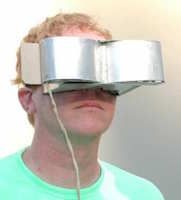
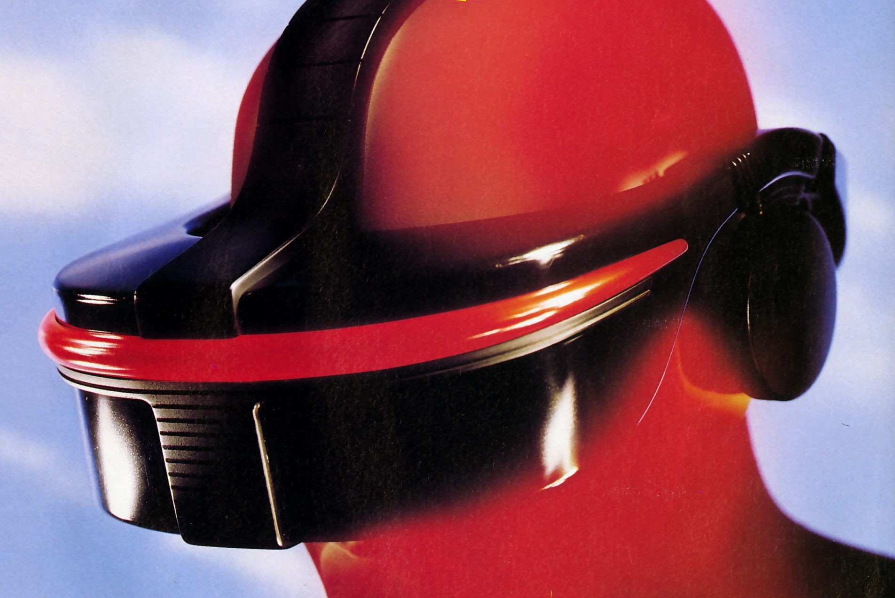
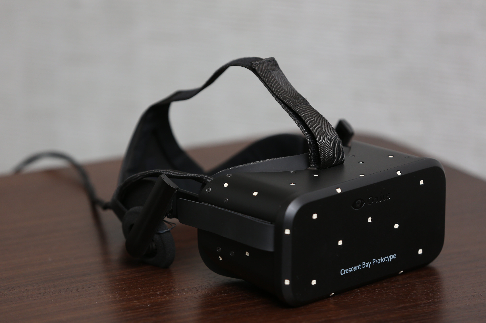
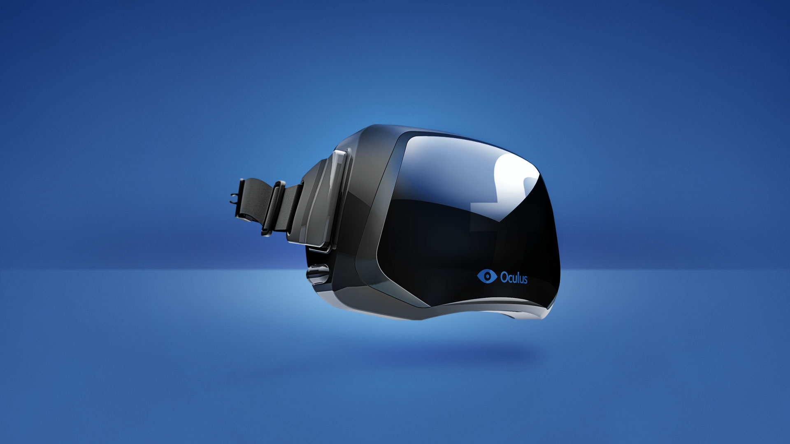
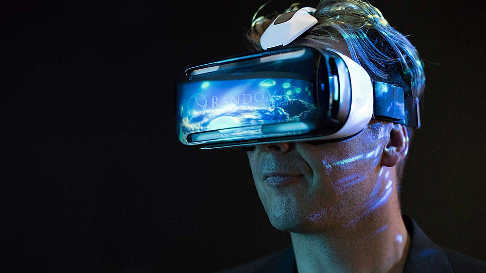
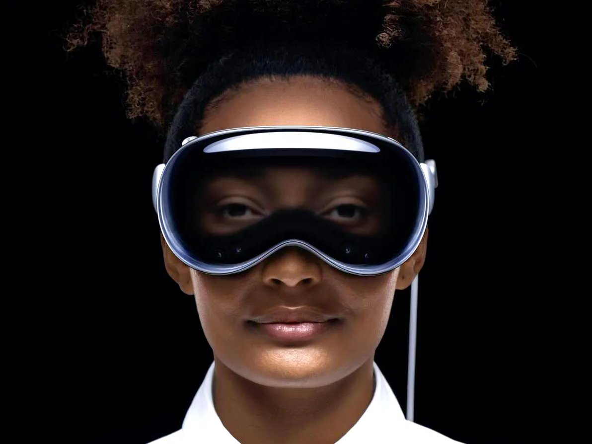

The History Of Virtual Reality
1960 - The First VR Headset
A man by the name of Morton Heilig invented the Telesphere Mask. This was the first example of a head-mounted VR headset. There was no interactive film medium or motion tracking.
1993 – SEGA Announces VR headset
In 1993, Sega showed off the Sega VR headset for the Genesis at the Consumer Electronics Show. The prototype had head tracking, stereo sound, and LCD screens, with a planned price of about $200 (around $322 in 2015). But due to technical problems, it never went beyond the prototype stage.
2010 - Oculus Rift Prototype
Palmer Luckey, an 18-year-old entrepreneur, built the first Oculus Rift prototype. It had a 90-degree field of view, a first for VR, and used a computer to generate the images. This sparked new interest in virtual reality.
2014 - An Explosion In VR
Facebook purchased Oculus Rift for 2 billion dollars. Sony followed by announcing Project Morpheus, a VR headset for the PS4. Google introduced Cardboard, a budget-friendly, DIY VR viewer for smartphones, while Samsung unveiled the Gear VR, using a Galaxy smartphone as its display.
2019 - Forbes Mention
Forbes called it "The Year Virtual Reality Gets Real." Facebook’s standalone Oculus Quest headset sparked major interest, selling out in many places and generating $5 million in content sales.
2023 - Apple Announces VR Headset
Apple entered the VR market with the Apple Vision Pro, a mixed-reality headset announced on June 5, 2023, at the Worldwide Developers Conference. It is priced at around $3,000.